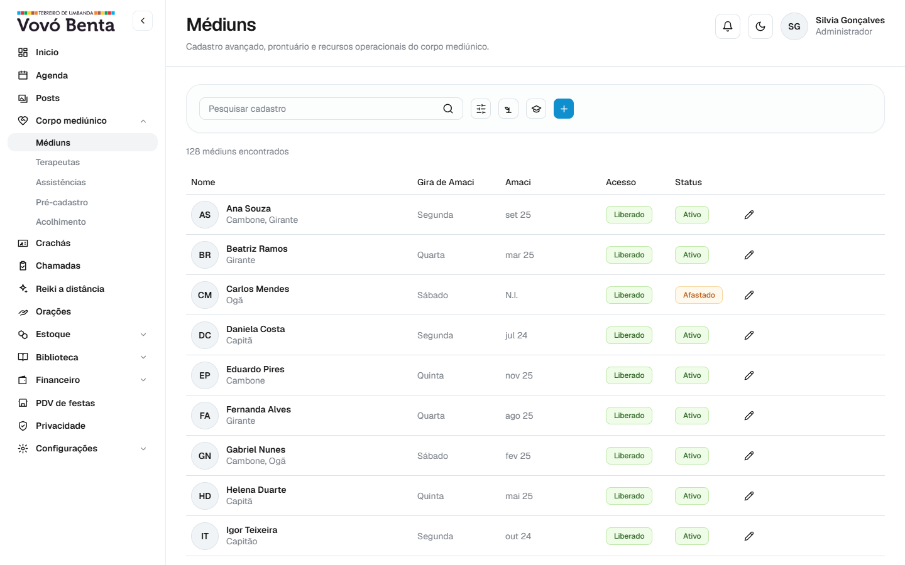
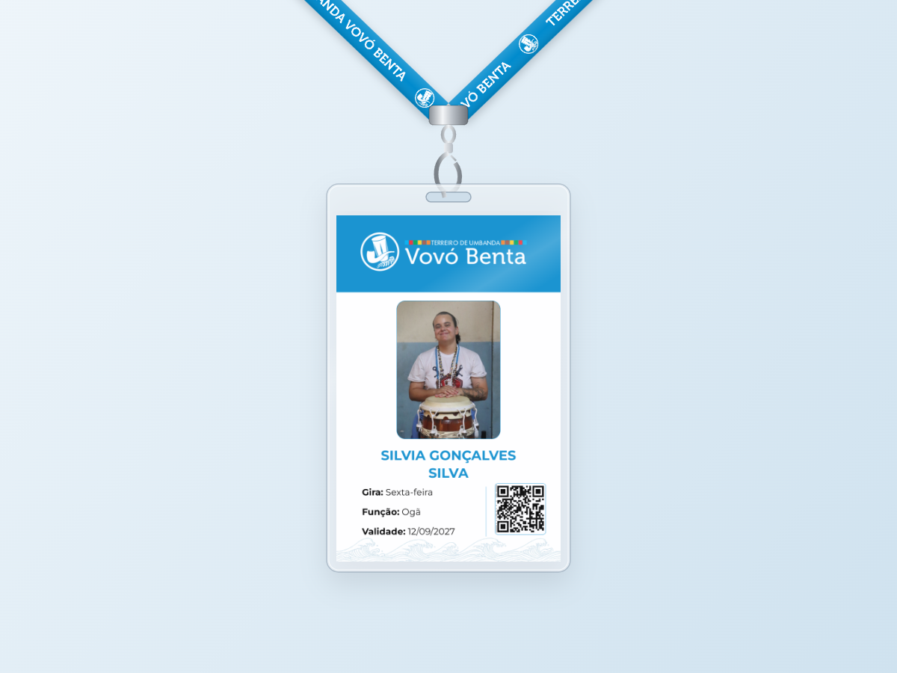
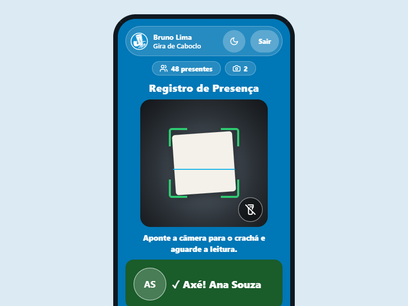
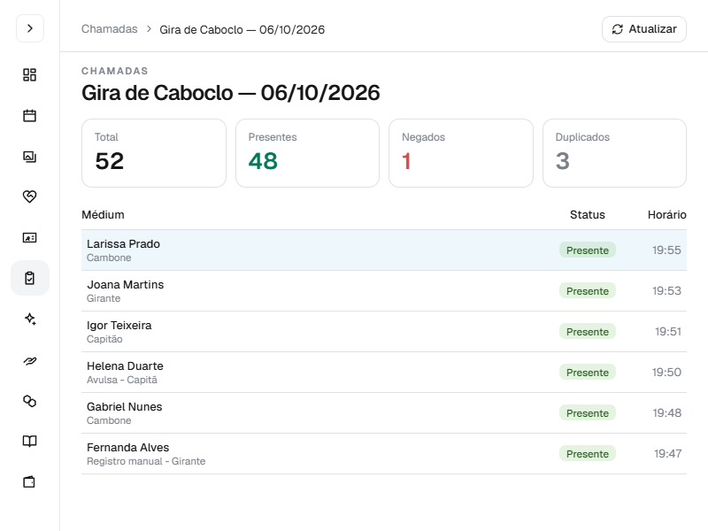

← projetos / sistemas
TVB System
Sistema de gestão de um terreiro: corpo mediúnico, crachás, chamada, PDV de festas, estoque, financeiro e biblioteca num lugar só.
300+pessoas usando no dia a dia

Chamadas no computador e corpo mediúnico no celular. Dados fictícios.
Módulos
Uma base de dados, uma API própria, seis frentes de trabalho. Toque para ver cada uma.
Destaque: chamada por QR Code
O médium apresenta o crachá, o celular do operador lê o QR Code e confirma a presença na hora, mesmo sem internet. A secretaria confere cada gira no painel: quem veio, quem foi barrado e quem tentou registrar duas vezes.



Integrações
contabilidadeCordilheira (EBS)O financeiro gera os lançamentos no formato do sistema contábil, sem redigitação.
segurançaBackup no Google DriveCópia automática do banco, fora da infraestrutura principal.
Stack
Código privado, por ser de uma instituição. Apresento o sistema numa conversa.
próximo projetoFinanSilva
→